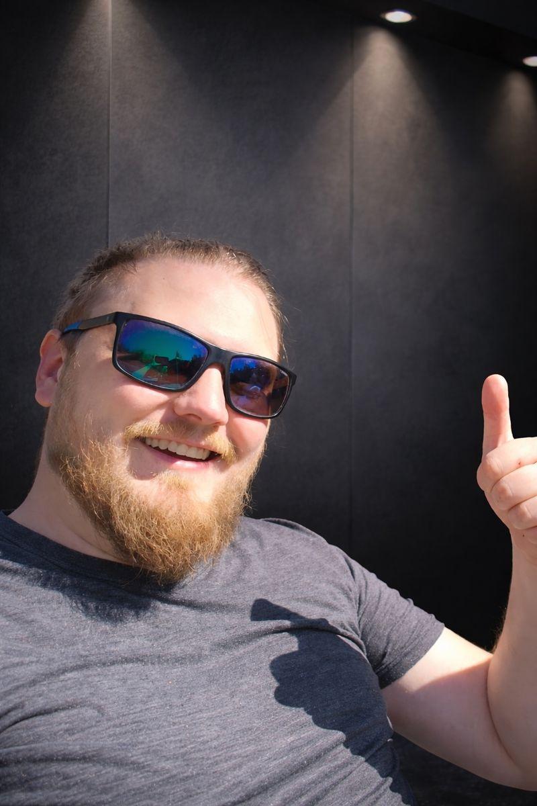
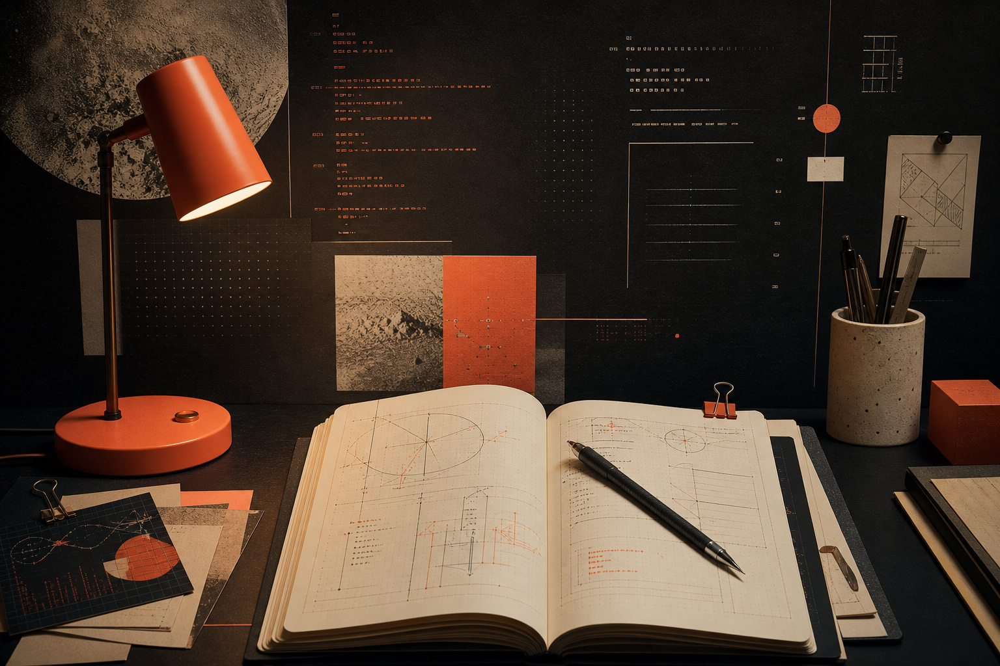
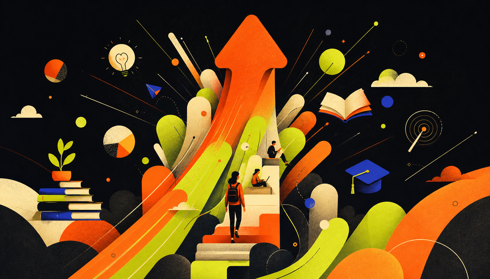

ICT voor de praktijkLearnMake
Ik maak ICT begrijpelijk — met aandacht voor de mens die ermee moet werken, leren en groeien.
LEARN / MAKE / SHARE01—03
01 / OVERZICHT
Waar wil je beginnen?
Vijf ingangen tot het werk van Tuur Housiaux.
01 / PERSOON
02 / TOOL
03 / NOTITIES
04 / TOETS
05 / GROEI

Tuur Housiaux
De gids
Over mij. · Mijn verhaal en ervaring →Het instrument
RBAC Analyzer.
Zelf rollen vergelijken →
Het labboek
Blog.
Zoek op datum of onderwerp →De leeromgeving
MS-102.
Eindtoets per domein →
Waar ik voor ga
BoostMeUp.
Bekijk BoostMeUp ↗02
Hoe ik werk
Ik wil dat je
ermee verder kunt.
Daarom leg ik niet alleen uit wat je moet doen. Ik wil dat je begrijpt waarom, zelf durft proberen en met vertrouwen je volgende stap zet.
- 01Ik luister eerst.
Wat heb je nodig en waar loopt het vast? Pas dan zoek ik mee naar een goede aanpak.
- 02Ik leg helder uit.
Stap voor stap, zonder onnodig jargon en met voorbeelden uit de praktijk.
- 03Ik geef vertrouwen.
Er mag geprobeerd, gevraagd en bijgestuurd worden. Zo ontstaat echte groei.
- 04Ik neem verantwoordelijkheid.
Ik kom afspraken na, zeg eerlijk wat wel en niet kan en blijf betrokken.